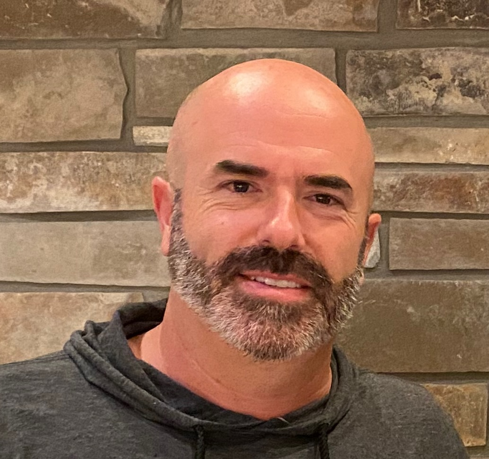

Damian Fink | WDD 130
I am excited to be taking this course and hope to learn more about web development. I am originally from California, now living in Utah and loving it.
I am excited to be taking this course and hope to learn more about web development. I am originally from California, now living in Utah and loving it.